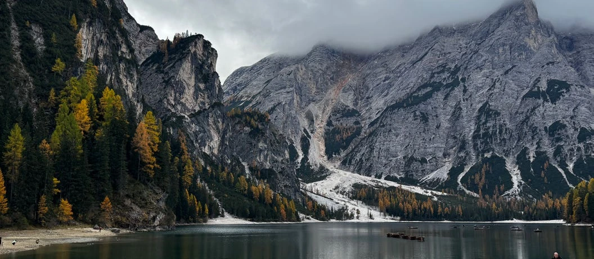
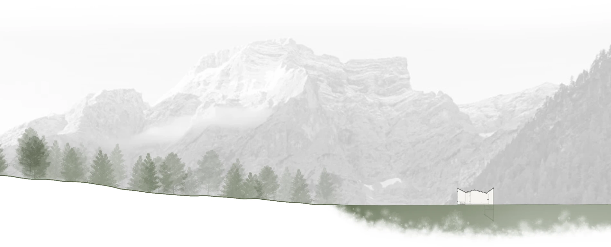
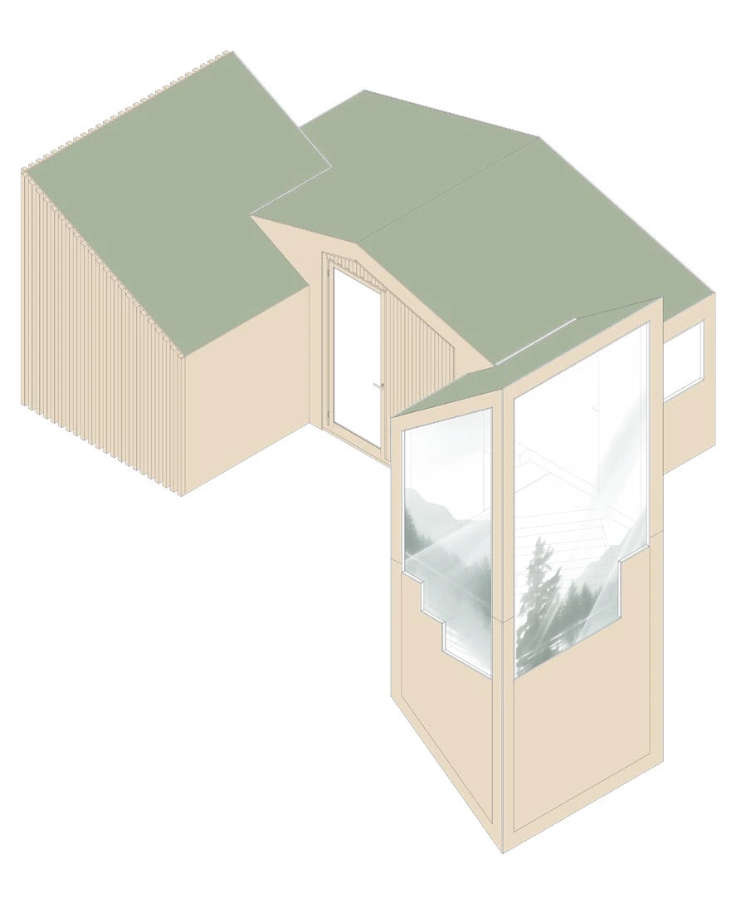
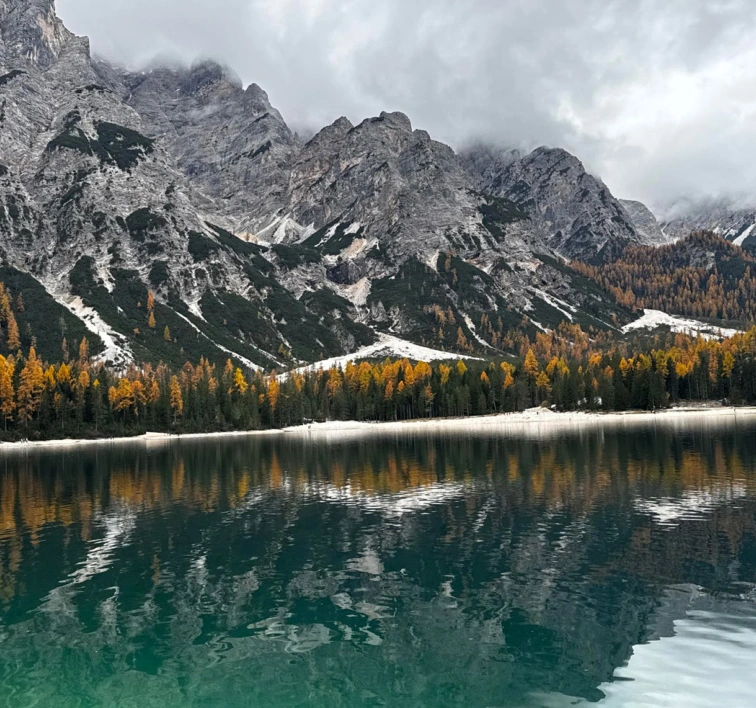
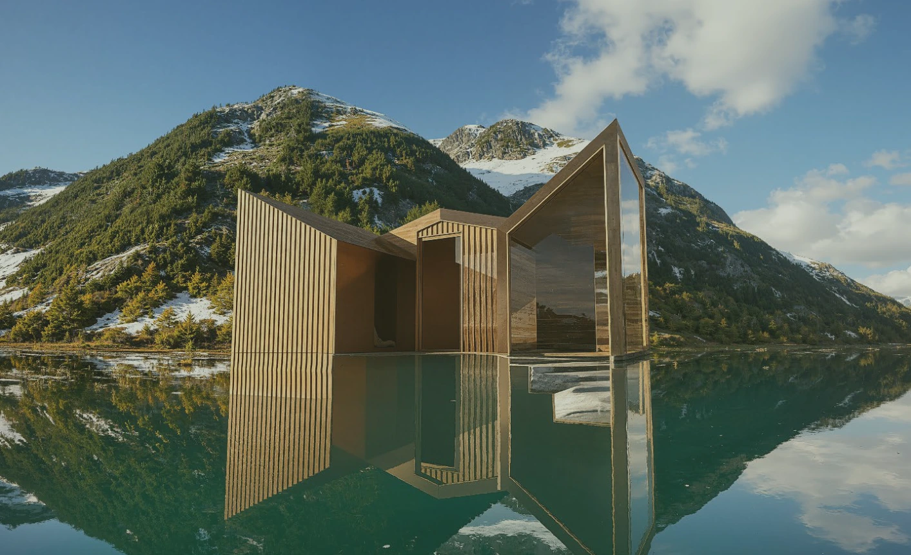
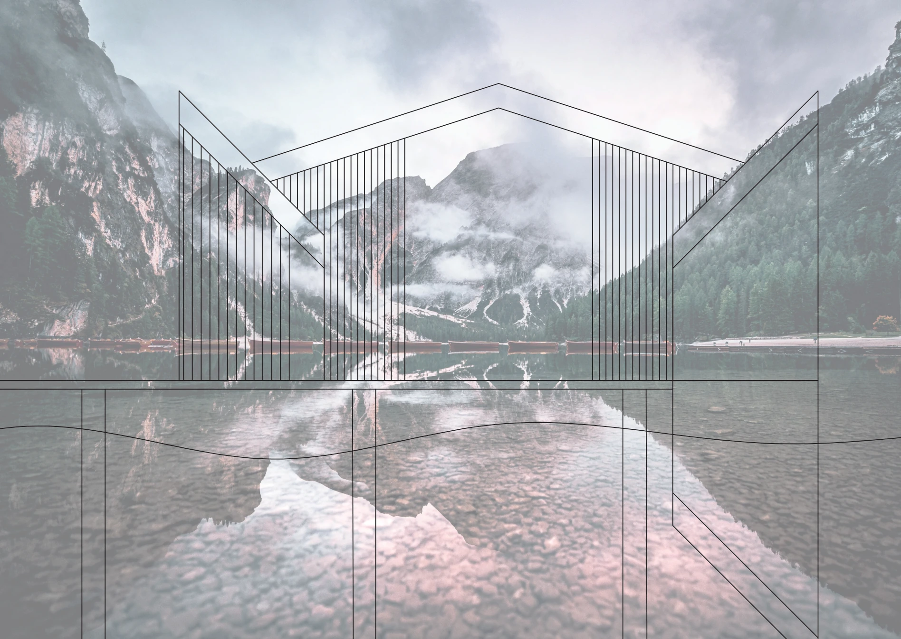
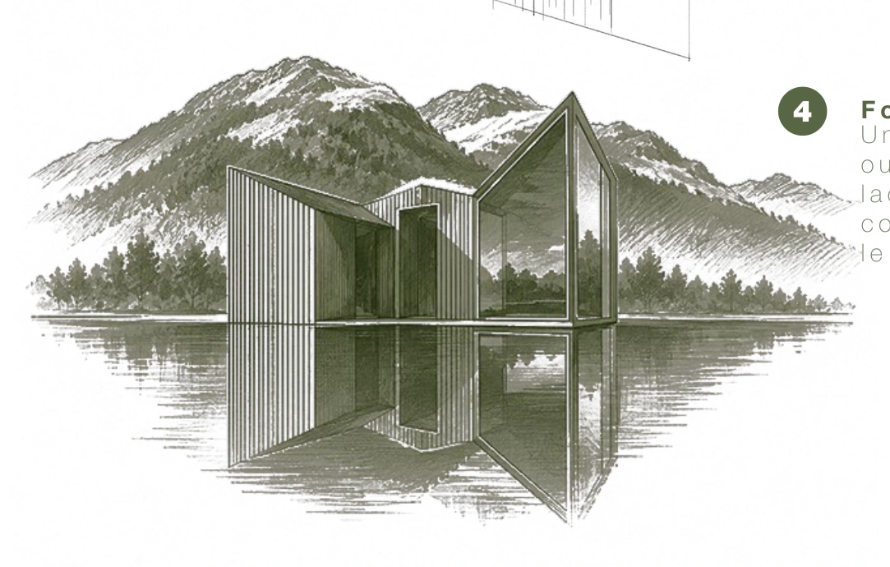
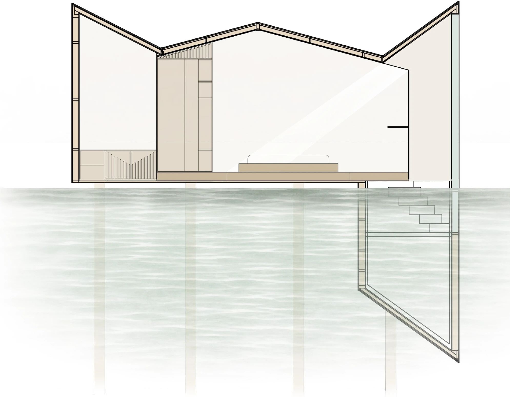
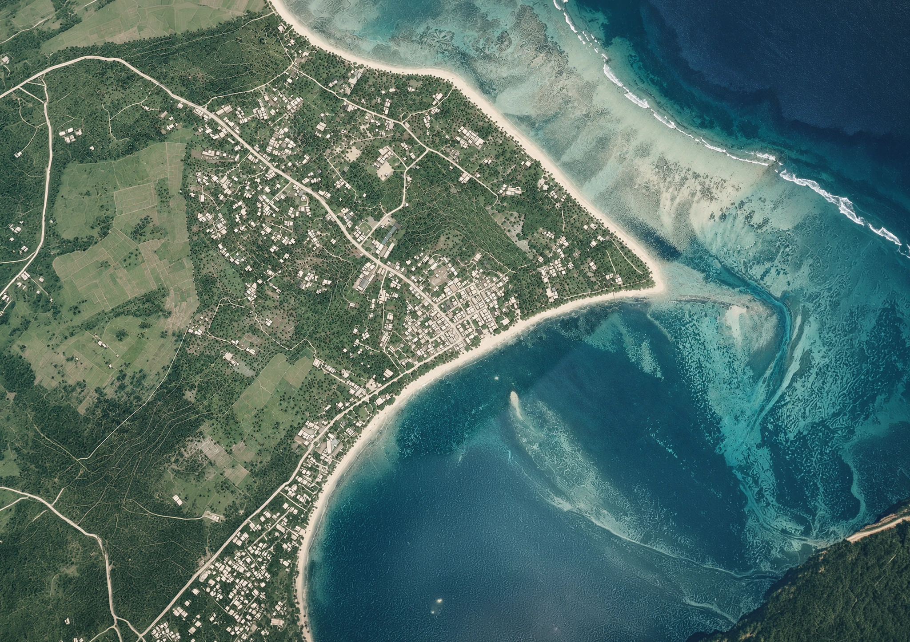

Suite hôtelière · Dolomites, Italie
Nuit flottante

Dolomites · Italie
Lago di Braies
Lago di Braies · Paysage
Lire le relief
Depuis la rive, la ligne des crêtes domine le lac. La coupe paysagère situe la suite au pied du versant, à la limite entre la forêt et l’eau.

Nuit flottante · Volumes
Du relief aux toitures
Le profil des montagnes se retrouve dans les pans de toiture. Leurs hauteurs dessinent une succession d’espaces intérieurs tournés vers l’eau.

Observer les rives
En faisant le tour du lac à pied, j’ai découvert deux manières très différentes d’approcher l’eau. Au nord, la plage minérale et les pontons permettent de la toucher. Sur les côtés est et ouest, le sentier monte entre les arbres et donne à voir la rive opposée en contrebas.
Cette différence a guidé mon étude d’implantation. J’ai reporté sur la carte les portions de sentier d’où la suite serait visible. Une ouverture qui cadre la montagne depuis le lit peut aussi exposer la chambre au regard d’un promeneur.


Une suite sur le lac
J’ai imaginé la suite pour une ou deux personnes qui viennent lire, écrire ou simplement regarder la lumière changer sur l’eau. Depuis l’intérieur, le plancher prolonge l’horizontale du lac. Depuis la rive, le reflet double la silhouette des toits et donne à la construction son apparente légèreté.

Carnet de recherche
Dessiner avec la ligne des crêtes
Sur cette double page du carnet, j’ai tracé les toits directement sur une photographie du lac. La ligne d’eau donne une base horizontale. Au-dessus, les pentes se répondent de part et d’autre d’un creux qui laisse le regard rejoindre la montagne.
Pour organiser la suite, j’ai comparé deux points de départ, la table du repas et le lit. Pour la version à une ou deux personnes présentée ici, j’ai retenu le second. Le schéma place l’espace nuit au centre, entre repas et détente, avec une ouverture vers l’extérieur.
Études extraites du carnet, p. 155 à 159.

Du paysage à la forme
Sur l’axonométrie, chaque pan de toiture appartient à un volume distinct. Leur assemblage autour d’un espace central permet de passer du coin nuit à l’espace de détente en changeant de hauteur sous plafond. Les vues sur le lac accompagnent ce déplacement.
Le carnet prolonge cette recherche à l’échelle des matières. J’y ai rapproché le noyer et le marbre blanc de Lasa pour retrouver, à l’intérieur, la chaleur des rives boisées et la lumière des parois rocheuses.


Entre immersion et suspension
La coupe explique comment la suite tient au-dessus du lac. Sous la ligne d’eau, les pilotis portent la plateforme. Au-dessus, l’ossature bois laisse lire les différentes hauteurs de la chambre et du séjour sous les rampants.
Au bord du toit, le détail du chéneau montre où se réunit l’eau qui descend de la couverture en zinc. À l’échelle du mur, le dessin suit la jonction entre le bardage vertical, l’ossature isolée et le plancher.


Autre projet
Habiter l’archipel
Siargao, Philippines